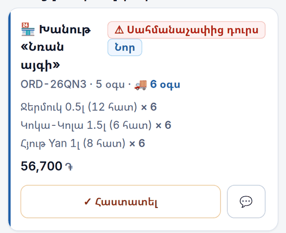
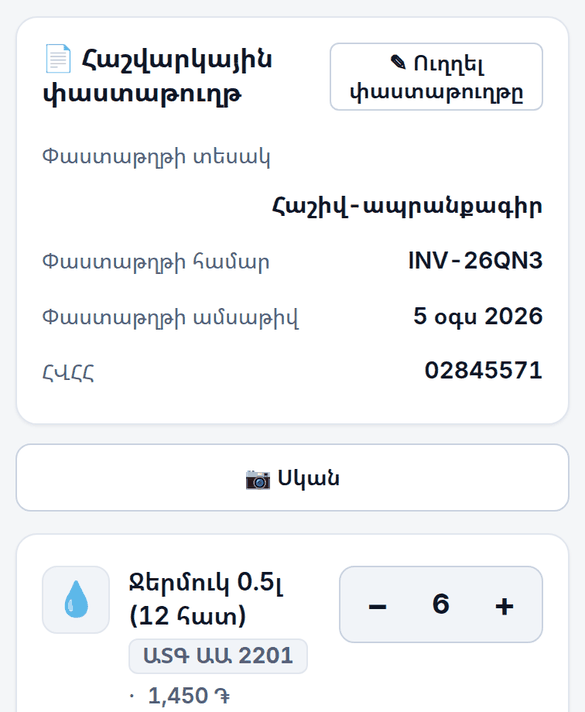
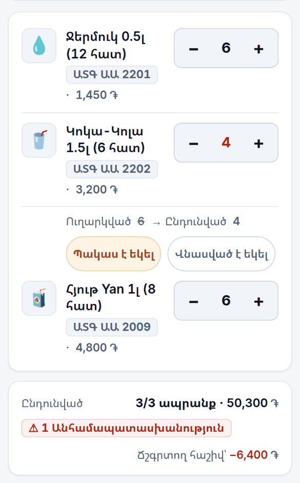
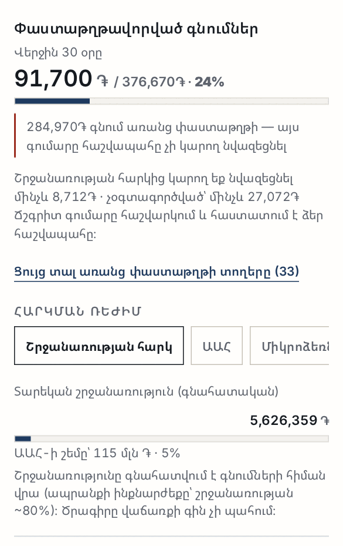
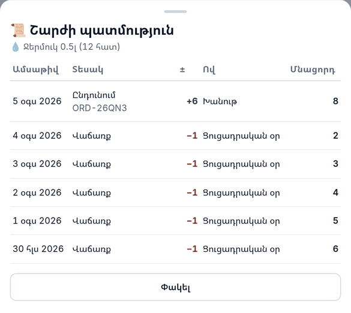
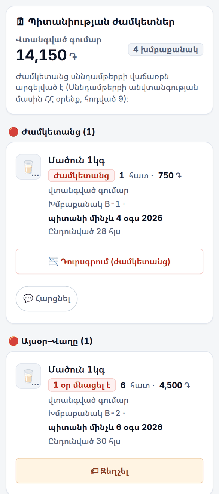
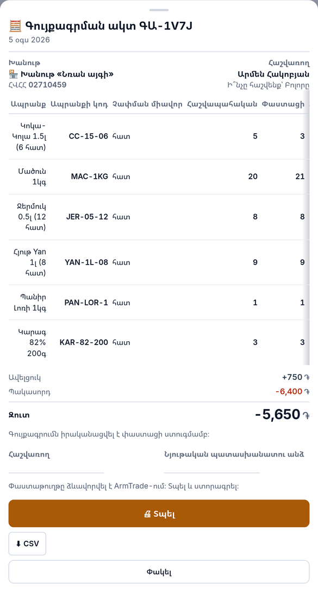
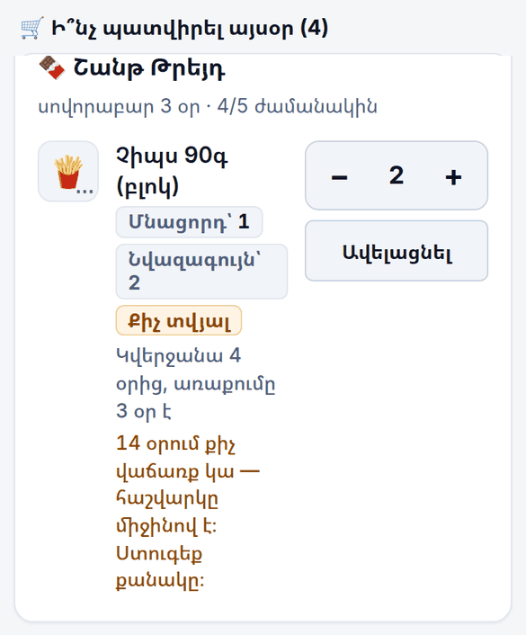
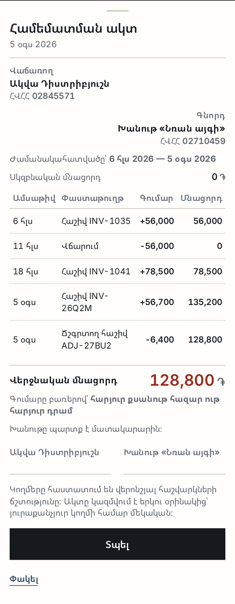

ArmTrade
Պատվերը զանգով է կամ Վայբերով։ Մնացորդը՝ տետրում կամ գլխում։ Իսկ ամսվա վերջում պարզվում է, որ մի քանի առաքում ընդհանրապես թղթով չի ձևակերպվել — և հենց փաստաթղթավորված գնումն է այն, ինչի վրա հենվում է ձեր հաշվապահի աշխատանքը։
ArmTrade-ը հենց այդ երեք բանն է կապում իրար՝ ի՞նչ եք պատվիրել, ի՞նչ է հասել, և ի՞նչ փաստաթղթով է հասել։ Խանութն ու մատակարարը նույն պատվերն են տեսնում՝ ամեն մեկն իր կողմից, առանց զանգի։
Բացվում է ցուցադրական տվյալներով — կարող եք ամեն ինչ սեղմել առանց վախի։
Ո՞ւմ համար չէ։
Ապրանքը դնում եք զամբյուղը և ուղարկում։ Ծրագիրն ինքն է պատվերը բաժանում ըստ մատակարարների — մեկ զամբյուղից երեք մատակարարի երեք առանձին պատվեր։ Մյուս կողմում մատակարարը տեսնում է նույն տողերը՝ նույն քանակով և նույն գումարով։
Յուրաքանչյուր մատակարար տեսնում է միայն իր ապրանքը և միայն իրեն ուղղված պատվերները։ Մի մատակարարի հաշվի տակ մյուսի գնացուցակը պարզապես գոյություն չունի։

Երբ մատակարարը նշում է «Առաքված», պատվերն արդեն լրացված հայտնվում է ձեզ մոտ՝ ընդունելու։ Ընդունման էկրանի ամենավերևում ոչ թե ապրանքն է, այլ փաստաթուղթը՝ տեսակը (հաշիվ-ապրանքագիր), համարը, ամսաթիվը և մատակարարի ՀՎՀՀ-ն։ Բոլորն էլ ուղղելի են, եթե թղթի վրա այլ բան է գրված։
Ամեն տողի տակ երևում է ԱՏԳ ԱԱ ծածկագիրը, որը գալիս է մատակարարի փաստաթղթից։ Խանութպանը այդ ծածկագիրը ձեռքով երբեք չի փնտրի — դրա համար էլ այն ժառանգվում է փաստաթղթից, ոչ թե մուտքագրվում։

Քանակը փոխում եք հենց այնտեղ, կանգնած՝ վարորդի կողքին։ Տողի տակ հայտնվում է «Ուղարկված 6 → Ընդունված 4» և ընտրություն՝ պակաս է եկել թե վնասված է եկել։
Ներքևում ծրագիրն ինքն է հաշվում ճշգրտող հաշիվը՝ տարբերության չափով։ Այն վճարման փաստաթուղթ չէ. այն ուղղում է արդեն տրված հաշիվ-ապրանքագրի գումարը, ստորագրվում է երկու կողմից, և մատակարարը այն տեսնում է իր մոտ։

Այս էկրանը մեկ բան է ասում. վերջին 30 օրում որքան եք գնել, և դրանից որքանն ունի հաշվարկային փաստաթուղթ։ Առանց փաստաթղթի տողերը ցուցակով բացվում են, և ամեն մեկին կարող եք ավելացնել համարը, ամսաթիվը և ՀՎՀՀ-ն։
Ներքևում կա շրջանառության գնահատական և ԱԱՀ-ի շեմին մոտենալու չափիչ։ Երկուսն էլ գնահատական են, և ծրագիրն այդպես էլ գրում է. շրջանառությունը հաշվվում է գնումների հիման վրա, որովհետև ArmTrade-ը ձեր վաճառքի գինը չի պահում։

Ամեն շարժ գրանցվում է առանձին տողով և չի ջնջվում՝ ընդունում, վաճառք, վերադարձ, դուրսգրում, գույքագրման ուղղում։ Ամեն տողի կողքին գրված է, թե ով է այն արել և որ փաստաթղթով։ Մնացորդը միշտ հավասար է շարժերի գումարին — այլ աղբյուր չկա։
Դուրսգրումը միշտ պատճառով է՝ ժամկետանց, վնասված, գողություն, սեփական օգտագործում, ուղղում։ Առանց պատճառի դուրսգրում ծրագիրը չի ընդունում, որովհետև հենց պատճառներն են այն, ինչից հետո կորուստը դառնում է թիվ, որ կարելի է նայել։

Ընդունելիս նշում եք խմբաքանակի պիտանիության ժամկետը։ Հետո «Ժամկետներ» էկրանը խմբավորում է ամեն ինչ՝ ժամկետանց, այսօր–վաղը, մոտենում է — և վերևում գրում է վտանգված գումարը։ Ամեն տողից կարող եք զեղչել, դուրս գրել կամ հարցնել մատակարարին։

Հաշվառումը կույր է. հաշվապահական մնացորդը թաքնված է, մինչև ակտը կազմվի — որպեսզի թիվը չհուշի։ Կարող եք հաշվել ամեն ինչ, մեկ մատակարարի ապրանքը կամ «օրվա ցուցակը»՝ մինչև 20 ապրանք ըստ ռիսկի, որպեսզի խանութը մեկ օրում չկանգնի։
Վերջում ստացվում է փաստաթուղթ, ոչ թե էկրան՝ ամսաթիվ, հաշվառողի անուն, ամեն տողի հաշվապահական և փաստացի քանակ, տարբերությունը հատով և դրամով, ընդհանուր ավելցուկն ու պակասորդը, և ներքևում՝ հաշվառողի ու նյութական պատասխանատու անձի ստորագրության տողերը։ Տպվում է հեռախոսից։

Ծրագիրը ոչինչ ինքնաբերաբար չի պատվիրում։ Այն առաջարկում է քանակ և կողքին գրում է ինչու. որքան է վաճառվում օրական, քանի օրից կվերջանա, և քանի օր է տևում այդ մատակարարի առաքումը։ Համաձայն չեք — փոխում եք թիվը կամ փակում առաջարկը։
Երբ պատմությունը դեռ քիչ է, ծրագիրը դնում է «Քիչ տվյալ» պիտակը և ուղիղ գրում է, որ հաշվարկը միջինով է և քանակը պետք է ստուգել։ Ավելի լավ է անվստահ երևալ, քան սխալ քանակ պատվիրել տալ։

Ամեն ընդունում ծնում է հաշիվ, ամեն վճարում՝ տող։ Պարտքն ըստ մատակարարների միշտ երևում է, և ամեն մատակարարի համար կարող եք կազմել համեմատման ակտ՝ ժամանակահատվածով, սկզբնական մնացորդով, բոլոր փաստաթղթերով և վերջնական մնացորդով՝ գումարը բառերով և երկու ստորագրության տեղով։
Գնումների պատմությունը առանձին աղյուսակ է՝ ամեն տողի դիմաց իր հաշվարկային փաստաթուղթը։ Այն կարելի է հանել CSV-ով և տալ հաշվապահին։ Ֆայլում ձեր վաճառքի գինը և մարժան չկան։

Այս ինը էկրանից բացի ծրագրում կան նաև՝ շտրիխ կոդի սկան հեռախոսի տեսախցիկով (ընդունելիս և հաշվառելիս), ապրանքի քարտ՝ ԱՏԳ ԱԱ և ԱԴԳ ծածկագրերի դաշտերով, առանձին չատ ամեն ապրանքի շուրջ, զեղչ ժամկետամոտ ապրանքի վրա, վերադարձ մատակարարին, և հաշվետվություններ՝ կանգնած ապրանք, ABC դասակարգում, դուրսգրումներ ըստ խմբի։
Ծրագիրը ոչ մի տվյալ չի ուղարկում ՊԵԿ կամ որևէ պետական մարմնի։ Ամբողջ տվյալը ձեր հեռախոսում է։
Ծրագիրը բացվում է ցուցադրական տվյալներով։ Ոչինչ չեք կոտրի — ամեն ինչ կարող եք սեղմել, պատվեր անել, ջնջել։ Իրական տվյալ այստեղ չկա։
Ամենաարագ ձևը. բացեք ArmTrade-ը և սեղմեք «Փորձել առանց մուտքի» — երկու կողմն էլ՝ խանութն ու մատակարարը, կերևան մեկ էկրանին։ Այդպես ամենալավն է հասկանալ, թե ինչպես է պատվերը մի կողմից մյուսը գնում։
Կամ մտեք որպես կոնկրետ մասնակից — այդ դեպքում կտեսնեք ճիշտ այն, ինչ տեսնում է այդ մարդը, և ուրիշ ոչինչ․
nran2026aqua2026katn2026shant2026Մատակարարի հաշիվը տեսնում է միայն իր ապրանքն ու պատվերները։ Մտեք Ակվայով և կհամոզվեք, որ Կաթնաղբյուրի գնացուցակը ձեզ համար պարզապես գոյություն չունի։
Հինգ րոպեում ամբողջ գաղափարը հասկանալու ճանապարհը՝
aqua2026-ով) — պատվերն արդեն այնտեղ է։
Հաստատեք և նշեք «Առաքված»։Ամբողջ ծրագիրը՝ էկրան առ էկրան, խանութի կողմը և մատակարարի կողմը առանձին։ Հայերեն, անգլերեն և ռուսերեն՝ նույն էջում։ Այնտեղ կա նաև տեխնիկական բաժին ծրագրավորողի համար։
Մեկ էջ՝ ի՞նչ խնդիր է լուծում և ի՞նչ է տալիս երկու կողմին։ Հարմար է ուրիշին ցույց տալու կամ տպելու համար։
Էկրանների նկարները վերցված են աշխատող ծրագրից՝ ցուցադրական տվյալներով։ Թվերը ցուցադրական են։ Այս էջը հայերեն է. ուղեցույցը հասանելի է նաև անգլերեն և ռուսերեն։
ArmTrade · assay-9e6.pages.dev